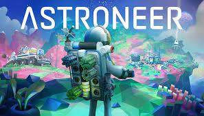
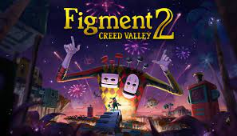
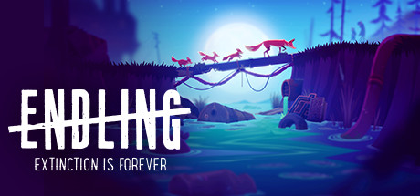
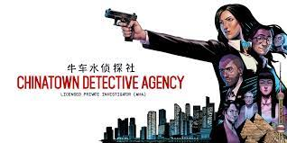

Boas notícias para os fãs mais ansiosos por God of War: Ragnarok: a Santa Monica Studio afirmou que o jogo segue programado para 2022. O título sairia inicialmente em 2021, mas acabou postergado para este ano.
Leia mais...Diego Maradona, um dos jogadores mais icônicos na história do futebol, não poderá mais ser obtido no jogo, seja nos pacotes do FIFA Ultimate Team, no Ultimate Draft ou na Seleção do Mundo do Soccer Aid.
Leia mais...Call of Duty: Warzone, Battle Royale grátis para PlayStation 4, Xbox One e PC , será lançado também para dispositivos mobile. A informação foi anunciada pela Activision nesta quinta-feira (10), em uma publicação para divulgar vagas no desenvolvimento do jogo...
Leia mais...A adição do jogo ao catálogo do Switch Online neste mês marca o ritmo perene que a Nintendo adotou para trazer uma nova aventura por mês para os assinantes.
Leia mais...Nessa aventura, os jogadores podem trabalhar em conjunto para construir bases sobre ou embaixo do solo, criando veículos para explorar um vasto sistema solar e usando o próprio terreno para criar o que a imaginação mandar. A criatividade e ingenuidade do jogador serão as chaves para o sucesso nessas animada aventura planetária.
Um jogo de ação e aventura ambientado dentro da mente humana. Pesadelos estão espalhando o caos e os inimigos tomaram as terras pacíficas. Junte-se a Dusty, a coragem da Mente, atravessando quebra-cabeças, chefes de fase musicais em ambientes únicos. Encare seus medos!
Experiencie como seria a vida em um mundo devastado pela humanidade através dos olhos da última raposa a habitar o planeta Terra, nessa aventura que despertará sua consciência ecológica. Descubra a força destrutiva da raça humana, que, dia após dia, corrompe, polui e a explora os mais valiosos recursos da natureza.
Uma aventura misteriosa que te levará através de Singapura e do mundo na perseguição de criminosos, testemunhas e pistas. Faca uma investigação real para resolver quebra-cabeças e descobrir dicas, gerenciar seu time e recursos para resolver casos de clientes bem intencionados ou perversos. No caminho, desenrole uma rede de conspirações e plotes que ameaçam levar a cidade de Lion aos limites.
